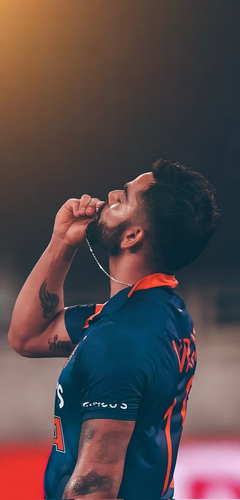

Virat Kohli (Hindi pronunciation: [ʋɪˈɾaːʈᵊ ˈkoːɦᵊliː] ⓘ, born 5 November 1988) is an Indian international cricketer
and the former captain of the Indian national cricket team. He is a right-handed batsman and an occasional
medium-fast bowler. He currently represents Royal Challengers Bengaluru in the IPL and Delhi in domestic cricket.
Kohli is widely regarded as one of the greatest all-format batters of all time.[3] He also holds the record for
scoring the most centuries in ODI cricket and stands second in the list of most international centuries scored, and
is highest run-scorer in IPL. Kohli was a member of the Indian team that won the 2011 Cricket World Cup, 2013 ICC
Champions Trophy, 2024 T20 World Cup and 2025 Champions Trophy. Further captained India to win the ICC Test mace
three consecutive times in 2017, 2018, and 2019.

In 2013, Kohli was ranked number one in the ICC rankings for ODI batsmen. In 2015, he achieved the summit of T20I
rankings. In 2018, he was ranked top Test batsman, making him the only Indian cricketer to hold the number one spot
in all three formats of the game. He is the first player to score 20,000 runs in a decade. In 2020, the
International Cricket Council named him the male cricketer of the decade.
Kohli has received many accolades for his performances in cricket. He won the ICC ODI Player of the Year award four
times in 2012, 2017, 2018, and 2023. He also won the Sir Garfield Sobers Trophy, given to the ICC Cricketer of the
Year, on two occasions, in 2017 and 2018 respectively. In 2018, he became the first player to win both ICC ODI and
Test Player of the Year awards in the same year. Also, he was named the Wisden Leading Cricketer in the World for
three consecutive years, from 2016 to 2018. At the national level, Kohli was honoured with the Arjuna Award in 2013,
the Padma Shri in 2017, and India's highest sporting honour, the Khel Ratna award, in 2018.
In 2018, Time magazine included him on its list of the 100 most influential people in the world. Kohli has been
deemed one of the most commercially viable athletes, with estimated earnings of ₹634 crore (US$75 million) in the
year 2022.In 2013, Kohli was ranked number one in the ICC rankings for ODI batsmen. In 2015, he achieved the summit of T20I
rankings. In 2018, he was ranked top Test batsman, making him the only Indian cricketer to hold the number one spot
in all three formats of the game. He is the first player to score 20,000 runs in a decade. In 2020, the
International Cricket Council named him the male cricketer of the decade.
Kohli has received many accolades for his performances in cricket. He won the ICC ODI Player of the Year award four
times in 2012, 2017, 2018, and 2023. He also won the Sir Garfield Sobers Trophy, given to the ICC Cricketer of the
Year, on two occasions, in 2017 and 2018 respectively. In 2018, he became the first player to win both ICC ODI and
Test Player of the Year awards in the same year. Also, he was named the Wisden Leading Cricketer in the World for
three consecutive years, from 2016 to 2018. At the national level, Kohli was honoured with the Arjuna Award in 2013,
the Padma Shri in 2017, and India's highest sporting honour, the Khel Ratna award, in 2018.
In 2018, Time magazine included him on its list of the 100 most influential people in the world. Kohli has been
deemed one of the most commercially viable athletes, with estimated earnings of ₹634 crore (US$75 million) in the
year 2022.